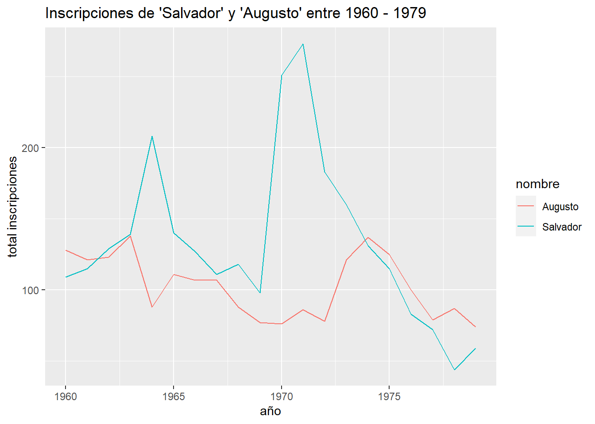

Código
10 + 5 # ¿cuánto es 10 + 5?[1] 15R para análisis estadístico
Esta práctica tiene dos objetivos: 1) Generar un primer acercamiento al uso de R y Rstudio, conociendo su interfaz y sus principales funcionalidades y 2) revisar algunos procedimientos básicos de la preparación de datos con R, que son necesarios para luego poder aplicar los contenidos más específicos de este curso.
Acceder a la página de posit, desarrollador del software desde octubre de 2022. Link directo a la descarga acá.
Instalar R y Rstudio


Alternativa a lo anterior: https://posit.cloud/
Versión online de Rstudio
Utilizar en caso de problemas con PC
evitar uso de tilde, ñ, espacios y mayúsculas tanto en carpetas y archivos, así como también en los nombres de las variables
al momento de hacer consultas sobre problemas en la ejecución del código, adjuntar la siguiente información:
Código completo hasta que se produce el problema
Indicar línea del código donde se produce el problema
Adjuntar el resultado del output de la información de la sesión (sessionInfo())
En primer lugar vamos a abrir un archivo de R (script). Esto se puede hacer manualmente con File -> new file -> R script o directamente con ctrl + shift + N
Esta es nuestra hoja de código, que utilizaremos para procesar bases de datos, modificar variables y crear tablas y gráficos.
R puede ser una calculadora
10 + 5 # ¿cuánto es 10 + 5?[1] 1510 * 5 # ¿cuánto es 10 * 5?[1] 50Se pueden crear objetos y asignarles valores
a <- 28
b <- 8
a + b[1] 36O asignar operaciones a un objeto
c <- a + bSin embargo, la mayor parte del tiempo usamos funciones que ya existen en R
sum(28,8)[1] 36round(10.14536) #aproximar[1] 10Y muchas de estas funciones que utilizamos en R están contenidas en librerías o paquetes (packages)
La lógica de R es instalar librerías (solo 1 vez, con install.packages("librería")), y luego cargarlas cada vez que es necesario usarlas (con library(librería)). El problema de esto es que a veces no se sabe claramente qué librerías están instaladas y cuales no, lo que va a arrojar error al cargarlas. Y, como sucede en R, existe una librería para solucionar este problema que se llama pacman (package manager). Lo que hace pacman es cargar la librería, y si no está instalada, la instala y la carga:
Para utilizar la primera vez (si es que no está instalada):
install.packages("pacman")Y en adelante, las librerías se cargan así pacman::p_load(libreria1,libreria2,libreriaX) :
pacman::p_load(dplyr, guaguas, ggplot2)Para esta sesión las librerías que vamos a utilizar son:
dplyr: ajuste general de datos
guaguas: Paquete que contiene los datos de nombres de guaguas (bebés) registrados en Chile entre 1920 y 2021 según el Registro Civil e Identificación
ggplot2: Visualización de datos
Ajustar espacio de trabajo
Previo a la carga de nuestra base de datos, se recomienda ejecutar los siguientes comandos:
rm(list=ls()) # borrar todos los objetos en el espacio de trabajo
options(scipen=999) # valores sin notación científicaLa función rm(list=ls()) permite comenzar con un espacio de trabajo (environment) vacío y sin otros objetos. Así también, la función options(scipen=999) desactiva la notación científica, es decir, veremos los valores numéricos con todos sus decimales.
Datos
Cargamos la base de datos desde el paquete (para otras bases de datos se deben importar de otra forma, esto es solo como ejemplo)
base <- guaguasConocemos las dimensiones de la base de datos
dim(base)[1] 858782 5Son 858782 casos y 5 variables. Los nombres de estas variables son:
names(base)[1] "anio" "nombre" "sexo" "n" "proporcion"Y la base se ve así:
head(base)# A tibble: 6 × 5
anio nombre sexo n proporcion
<dbl> <chr> <chr> <dbl> <dbl>
1 1920 María F 2130 0.104
2 1920 José M 984 0.0483
3 1920 Juan M 636 0.0312
4 1920 Luis M 631 0.0310
5 1920 Rosa F 426 0.0209
6 1920 Ana F 340 0.0167Ahora probemos algunas funciones para seguir explorando la base
table(base$sexo)
F I M
531038 318 327426 Podemos ver la cantidad de nombres “F” (femenino), “M” (masculino) e “I” (indefinido) inscritos entre 1920 y 2021.
Pueden buscar sus nombres y probar, utilizamos la funcion filter del paquete dplyr
filter(base, nombre=="Kevin")# A tibble: 63 × 5
anio nombre sexo n proporcion
<dbl> <chr> <chr> <dbl> <dbl>
1 1931 Kevin M 1 0.0000120
2 1963 Kevin M 1 0.0000035
3 1964 Kevin M 1 0.00000344
4 1967 Kevin M 4 0.0000131
5 1970 Kevin M 6 0.0000210
6 1971 Kevin M 3 0.00000936
7 1972 Kevin M 3 0.00000945
8 1973 Kevin M 2 0.00000633
9 1974 Kevin M 5 0.0000163
10 1976 Kevin M 2 0.00000724
# ℹ 53 more rowsE incluso pueden ver la cantidad de personas con su nombre, en el mismo año que ustedes nacieron
d <- filter(base, nombre=="Kevin" & anio==1996)
sum(d$n)[1] 1312Avanzando un poco más, podemos utilizar ggplot2 para hacer un gráfico de líneas que muestre la evolución en el tiempo
datos <- filter(base, nombre=="Kevin")
ggplot(datos, aes(x = anio, y = n)) +
geom_line() +
labs(x = "Año", y = "Número de personas", title = "Número de personas llamadas Kevin por año")
¿Qué puede explicar el peak de “Kevins” previo a los 2000?
spoiler: link
guaguas %>%
filter(nombre %in% c("Salvador", "Augusto"), anio >= 1960 & anio <= 1979) %>%
ggplot(aes(anio, n, color = nombre)) +
geom_line() +
labs(x = "año", y = "total inscripciones", color = "nombre",
title = "Inscripciones de 'Salvador' y 'Augusto' entre 1960 - 1979")
Github es una plataforma de desarrollo colaborativo que permite alojar proyectos utilizando el sistema de control de versiones Git. Se utiliza principalmente para la creación de código fuente de programas (software).
El 4 de junio de 2018 Microsoft compró GitHub por la cantidad de 7500 millones de dólares. Al inicio, el cambio de propietario generó preocupaciones y la salida de algunos proyectos de este sitio; sin embargo, no fueron representativos. GitHub continúa siendo la plataforma más importante de colaboración para proyectos de código abierto.
Un repositorio contiene todo el código, tus archivos y el historial de revisiones y cambios de cada uno de ellos. Es el elemento más básico de Github.
Los repositorios pueden contar con múltiples colaboradores y pueden ser públicos o privados.
| Término | Definición |
|---|---|
| Branch | Una versión paralela del código contenido en el repositorio, pero que no afecta a la rama principal. |
| Clonar | Para descargar una copia completa de los datos de un repositorio de GitHub.com, incluidas todas las versiones de cada archivo y carpeta. |
| Fork | Un nuevo repositorio que comparte la configuración de visibilidad y código con el repositorio «ascendente» original. |
| Merge | Para aplicar los cambios de una rama y en otra. |
| Pull request | Una solicitud para combinar los cambios de una branch en otra. |
| Remote | Un repositorio almacenado en GitHub, no en el equipo. |
| Upstream | La branch de un repositorio original que se ha forkeado o clonado. La branch correspondiente de la branch clonada o forkeada se denomina «descendente». |
Registrarse ingresando correo electrónico y siguiendo los pasos siguientes (crear contraseña y nombre de usuario)

La personalización de la cuenta se puede saltar haciendo click en skip abajo de la selección de opciones

En la página principal de github hacer click en el ícono de usuario de la esquina superior derecha y luego ir a Tus repositorios

Una vez accedemos a Tus repositorios hacemos click en New/Nuevo

Luego le ponemos un nombre a nuestro repositorio, evitando siempre espacios, ñ y tíldes, y apretamos Crear repositorio

Una vez creado un repositorio, lo que nos interesa es descargarlo. Al abrir la aplicación de Github desktop por primera vez (descargada anteriormente), nos debería aparecer la opción de clonar nuestro repositorio R-data-analisis en la pantalla de inicio. Lo clonamos y seleccionamos una carpeta de nuestro computador para almacenarlo.
Para todas las siguientes veces, las instrucciones son estas:
1- Apretamos Repositorio actual en la esquina superior izquierda
2- Apretamos añadir
3- Apretamos clonar repositorio…

4- Seleccionamos nuestro repositorio
5- seleccionamos la carpeta donde se almacenará. Siempre evitando tener tíldes, ñ y espacios en la dirección de almacenamiento.

Un Rproject es una herramienta de R que nos permite establecer un directorio de trabajo en una carpeta de nuestro computador. Al hacerlo, establecemos un espacio de trabajo que permite crear una estructura de carpetas donde guardar los documentos asociados al proyecto. De esta forma, creamos un conjunto de archivos autocontenidos en un solo lugar que nos permite organizar nuestro trabajo y facilitar la reproducibilidad. En las próximas sesiones estableceremos un protocolo de trabajo que permite organizar y armonizar el trabajo: el protocolo IPO.
Para crear un Rproject:
Abrir Rstudio
Seleccionar Archivo -> Nuevo proyecto

Seleccionamos la opción de directorio existente
Seleccionamos la carpeta donde descargamos nuestro repositorio de Github en el paso anterior
Apretamos el botón de crear proyecto
Para crear un documento Quarto (.qmd)


Renderizar es el proceso mediante el cual R transforma nuestro código de quarto en un documento dinámico según el output que especifiquemos. En este caso fue .html, pero también puede ser .pdf, .txt o .doc (no recomendado)
Ahora que tenemos nuestro documento renderizado en nuestro computador lo que nos interesa es subir todos los cambios que hicimos en nuestro repositorio a Github.

Le ponemos un nombre al Commit
Apretamos Commit to main para guardar los cambios
Un Commit es una acción de compromiso. Se refiere a que un autor/investigador se hará cargo de los cambios que se hicieron.

Ahora lo que nos interesa es crear una página de internet que nos permita visualizar el documento de Quarto que acabamos de crear. Para eso vamos a la opción Settings/ajustes
Una vez en settings nos dirigimos a la sección de páginas (pages)

Luego en la sección Branch apretamos el botón none/ninguno
Seleccionamos la opción Main y luego Save/guardar. Con esto hacemos que github haga un deploy de nuestro repositorio, específicamente de nuestra main branch.
Si actualizamos la página luego de uno o dos minutos, podemos ver que Github creo un sitio web para el repositorio. En este caso el enlace es https://kevincarrascoq.github.io/R-data-analisis/. Que incluye primero el nombre usuario seguido de github.io y luego el nombre del repositorio /R-data/analisis.
Sin embargo, este enlace funciona como página principal de nuestro repositorio (más adelante veremos cómo editarla). En este momento, para llegar a nuestro documento renderizado de quarto, debemos agregar el nombre del archivo en el enlace que nos da Github, que en este caso es R-data-analisis.html.